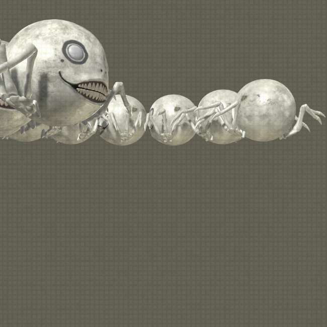

This mysterious creature emerged from inside of a machine lifeform and set up a shop after obtaining a new body. While he calls himself Emil, his true identity is a mystery. Once he discovered who had been stealing from his room, he was incited to fight. But after being defeated, he was reduced to tears by the realization that only power matters in this world.
Notes
The player will have to face Emil as 9S, as the chest containing the item needed to trigger his boss fight is locked.
Emil and his clones are the highest-level entities found in the base game, at level 99.
Extra Info
The text on the flyers attached to his body change during his boss fight.
"Bargain Day/Sale" switches to "Judgment Day/Pain" on his right.
Item listings and their prices on his left switch to a simple "Warning" poster with his face on it instead.

Emil Clones1
ErRoR, Can be found in the Desert Zone.
Story
These colossal Emils were the sad final state of Emil's copies. Attacking without warning, they possessed the ability to unleash fierce attacks using magical weapons from the old world. At the end of this pitched battle, the true Emil stopped his doppelgangers with heartfelt words before annihilating them with a final strike. He then passed away with an expression of great relief, as if he had finally met the person he'd longed to see.
Notes
The final hidden boss of the game is encountered through the Emil's Determination side quest. Upon upgrading every weapon to Level 4, a new quest marker will appear at the Shopping Center. Once there, talk to your Pod and it will say that Emil is heading to the Desert Zone.
When nearing the final blow, a self-destruct sequence will initiate leaving the player with two choices:
Allow Emil to blow up, achieving the head[Y] battle ending.
Stop the countdown by destroying the Emil Clone, completing the quest. Afterwards, the player will receive a save prompt and then be returned to the title screen.
There is no way to replay this quest once it has been saved as completed, which means that Ending Y is the only permanently missable content in the game.
Extra Info
Emil references his struggle with life in the past during the battle, inferring events of the previous game, NieR.
The Emil Clones are a palette swap of the Hegel fought by A2, the difference being that the body sections look like enlarged versions of Emil's head.